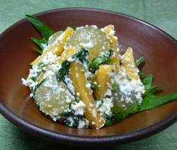

柿と葡萄の白和え
- 調理時間：30 分
- （一人当たり）
- カロリー：172kcal
- たんぱく質：6.2g
- 脂質：6.5g
- 塩分：1.2g


＜２人分＞
- 柿
- 1/2個
- ブドウ
- 5～6粒位
- 春菊
- 40g
- 大葉（飾り用
- 2枚
和え衣
- ・木綿豆腐
- 1/3丁
（120g位） - ・白ゴマ
- 大さじ1
- ・塩
- 小さじ1/3
- ・砂糖
- 大さじ1
- ・醤油
- 1～2滴


- 豆腐は熱湯でサッと茹で、重しをのせて水切りする。
-
＜和え衣を作る。＞
すり鉢で白ゴマをすり、よくすれたら豆腐、塩、砂糖を加え、なめらかになるまで更に擂る。
香り付けに醤油を１、２滴加える。 - 柿は皮をむいて短冊切り。ブドウは皮をむく。柿とブドウは塩水にひたす。
春菊は３～４㎝長さに切ってゆでる。 - ③に少々（分量外）の醤油を回しかけ、下味をつける。
- 春菊と果物の水けをよくきり、食べる直前に和え衣で和える。
柿と葡萄の白和え
もともと白和えは、僧侶が寺院で口にする料理で動物性食品を使わない精進料理の一品でした。昔ながらのお惣菜定番「白和え」ですが、最近では何が原料なのか分からない、という若者も多く、家庭で作ることが少なくなっているようです。
豆腐をつかった和え衣に季節の食材を和える白和えは、まさに日本のサラダ。白和え衣は日本のマヨネーズといえるでしょう。白和え衣さえマスターすれば、あとは旬の食材を用意するだけで四季折々の一品が食卓に並びます。
和える食材は自由に楽しみましょう。定番の野菜、こんにゃく、きのこの他に、今回のような果物もおすすめです。ほんの少しの果物がセンスアップに一役買う食材になること間違いなし。